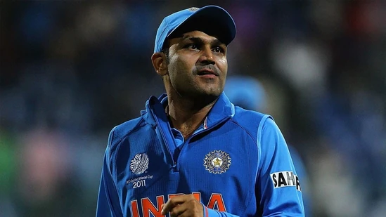

Delhi News Updated on Nov 13, 2022 09:03 PM IST The decision means that all types of vehicles can ply on Delhi roads from Monday without any restrictions.

World News Published on Nov 14, 2022 03:50 PM IST Joe Biden- Xi Jinping Meet: Xi and Biden greeted each other with a handshake at a luxury resort hotel in Indonesia.
With Rohit Sharma already 35 and the next T20 World Cup two years away, this certainly in the time for a change in guard, feels a former India pacer. He reckons either Hardik Pandya or Rishabh Pant can take over the command of the team and usher India's T20 team into a new era.

Former Pakistan wicketkeeper-batter Moin Khan was involved in a rather ugly spat with a Pakistan veteran over the latter's comment on Azam Khan, Moin's son.
The demolished constructions inside the hotel were taken up by Nanda Kumar, who was arrested along with two others in the TRS MLAs poaching case recently.
Bengal minister Akhil Giri drew widespread criticism recently for making controversial remarks against President Droupadi Murmu's looks. After a video clip of his comments went viral, Giri apologised for it.
Updated on Nov 14, 2022 07:43 PM IST
As Pakistan sweat over Shaheen's injury, a former PCB medical officer feels the road ahead for Afridi could be in danger if proper precautions are not taken or he is hurried back.

A crushing defeat to England in the semis ended Team India's hopes, and what followed was a barrage of criticism, which is something that Sachin Tendulkar is not strongly in favour of as he hit back at the critics with a strong reply.
Former Pakistan wicketkeeper-batter Moin Khan was involved in a rather ugly spat with a Pakistan veteran over the latter's comment on Azam Khan, Moin's son.

Published on Nov 14, 2022 08:14 PM IST
Updated on Nov 14, 2022 08:35 PM IST The two-day G20 Summit begins on Tuesday, and will be attended by US President Joe Biden and British Prime Minister Rishi Sunak among heads from 20 countries and the European Union who make up the group.

Upon receiving information, Hnahthial district officials and police accompanied by a medical team rushed to the spot. Young Mizo Association (YMA) Volunteers were also at the spot to help the officials with rescue efforts
Virender Sehwag said that the youngster should be making a comeback in the Indian team and also had a big ‘World Cup’ prediction for the player.
 <